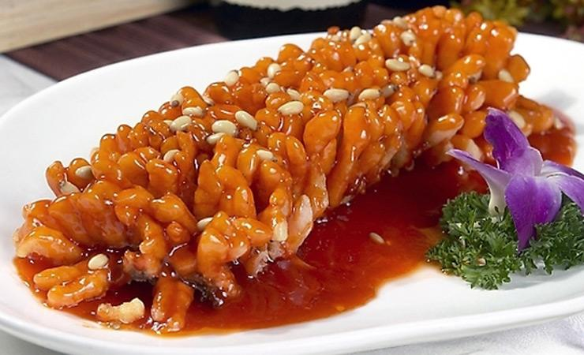
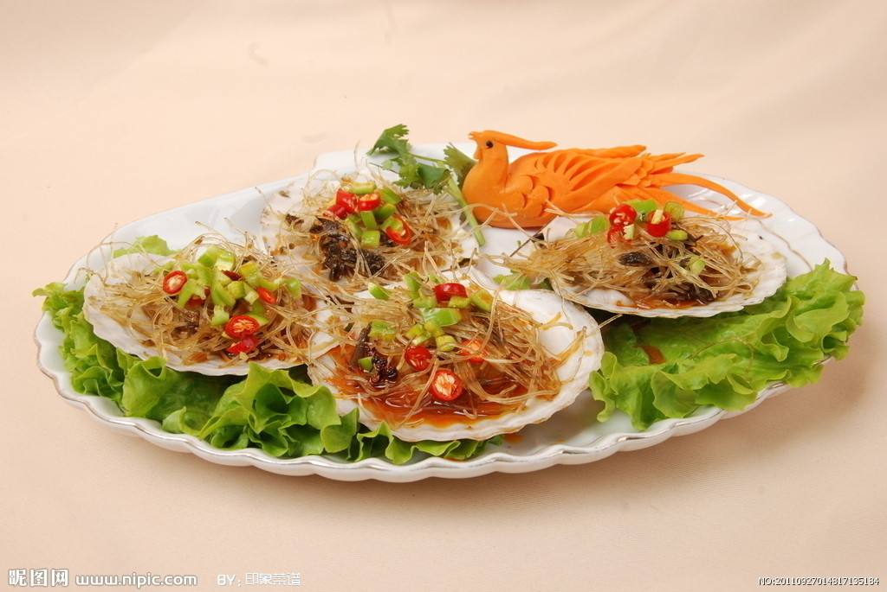
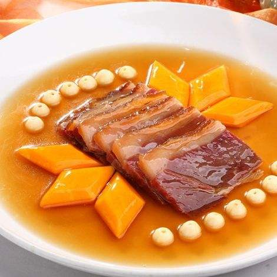
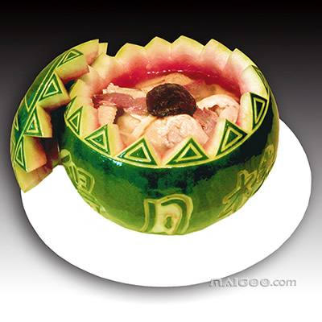
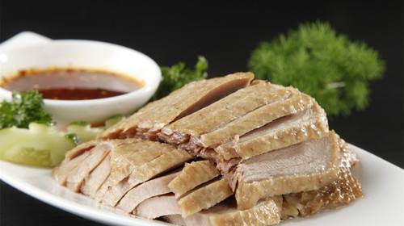

It began in the Southern and Northern Dynasties, the Tang and Song Dynasties, when economic development at that time, promoting the prosperity of the catering industry, the Soviet cuisine became one of the two greatest of the Southern Food. Jiangsu cuisine is represented by the four major cuisines of Suzhou, Huai'an, Nanjing and Zhenjiang. It is characterized by its rich and light taste, delicious fragrant tangy concoction, thick and greasy soup, and mild taste, sweet and salty taste. The cooking skills includes stewing, braising, burning, braising, and frying.
Squirrel-shaped Mandarin Fish

Jinling Scallops

Braised Ham with Chicken Soup

Watermelon Chicken

Salted Duck
